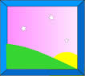
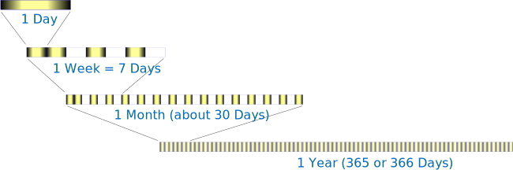
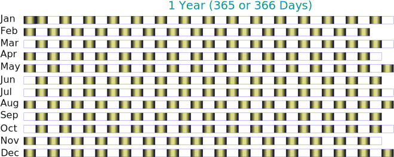

Days, Weeks, Months and Years
Wow, I just flew in from planet Micron. It was a long flight, but well worth it to get to spend time with you!
My name is Maggie in your language (but you couldn't pronounce my real name!)
When I first arrived I couldn't understand how you measure time, but my friend Tom taught me all about it, and I am going to share with you everything he taught me.
Today is my day to learn about days, weeks, months and years !
Days
|
Every time I wake up, Tom says it is ... ... a new Day!
|
Each day really starts at Midnight (12 O'clock at Night) and ends next Midnight:
| One Day | ||||
|---|---|---|---|---|
|  | ||||
| Midnight | Sunrise | Midday | Sunset | Midnight |
But I sleep when it is dark, so I only notice the new day when I wake up!
Days Have Names
Each day is special! Tom says there are seven different days:
|
And that after Sunday, it is Monday again!
Round and round every seven days.
Week
Seven days together make a week. A week can be any period of seven days, as shown here (click on any day, and a whole week is shown):
Tom said that he was going sailing in one week ... so that means he has to wait 7 days.
|
This is easy! I know what a Day is, and 7 Days make a Week: 1 Week = 7 Days |
Months
I have also heard people talk about Months ... what are they?
|
Tom says there are 12 different months! Each has a different name, and I should try to He says a month is about 30 days long, but some For example April has 30 days, but May has 31 Days!
|
If there are about 30 days in a month, how may weeks is that? Tom says that 30 days is a little longer than 4 weeks.
|
OK, some months are 30 Days, but not all of them. 1 Month = about 30 Days = about 4 Weeks |
Year
Tom says 12 months together make One Year:
1 Year = 12 Months
He says that a Year is a long period of time.
| ... from one Birthday to the next Birthday ... |  |
|
| ... or from one Christmas to the next ... |
And there are 365 days in a year (but some years are 366 days long if they are a Leap Year)
|
OK, so a Year is 12 Months 1 Year = 12 Months = 365 (or 366) Days |
Summary
I asked Tom for a diagram and this is what he showed me:
Days fit into a week, into a month and into a year like this:

And these are all the days in a year:

Tom says each month in the diagram has the correct number of days!
I tried counting them, but I lost count ... maybe you can do better.
|
I hope you enjoyed learning all about Days, Weeks, Months and Years. Now I must return home. Bye for now! |